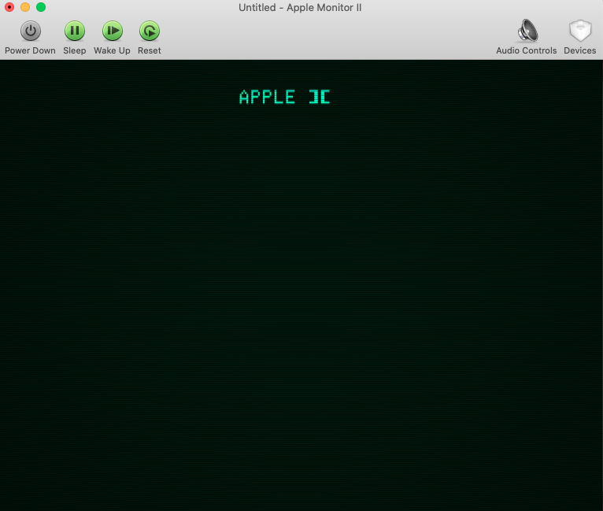
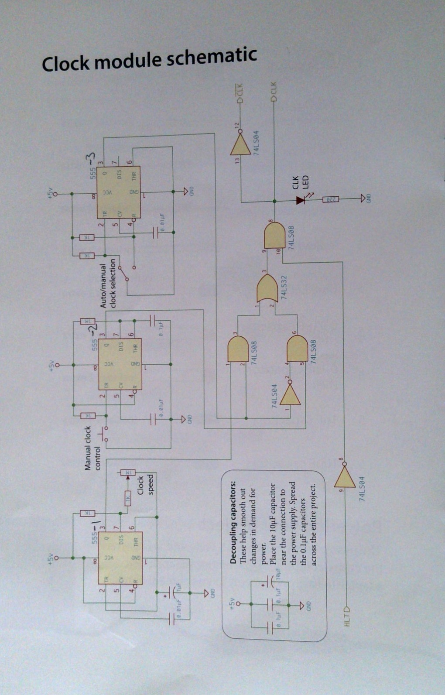

A Appendix A - Apple II 及 6502 CPU 相關資源
- github - Eiroca - Awesome List of Apple II resources
- Apple II emulator on MacOS
- Open Emulator - Apple II BASIC on MacOS
- 下載 OpenEmulator.app
- 執行 OpenEmulator.app 後, 選擇 Apple II plus (或其它), 會顯示以下螢幕 
- 左上角有幾個選擇: Power Down, Sleep, Wake Up, Reset. 選擇 Reset 會進入 BASIC, 可以開始寫 BASIC 程式
- 可以參考Apple BASIC 範例程式 - 包含簡單繪圖 : 這網頁最後還有幾個連結, 包含 The Applesoft Tutorial, Applesoft BASIC Programming Reference Manual.
- 這個網站對於 Apple BASIC 提供很好的入門, 擔心他後續不維護這網頁, 就把這網頁存下來, 建立個 mirroring site
- 這個網站對於 Apple BASIC 提供很好的入門, 擔心他後續不維護這網頁, 就把這網頁存下來, 建立個 mirroring site
- Open Emulator - Apple II BASIC on MacOS
- Apple II emulator
- 如何在網頁上撰寫 Apple BASIC
- Applesoft BASIC in Javascript 也是不錯的入門網站, 也包含許多示範程式, 及 6502 assembly 網頁
- Apple II emulator on MacOS
- AppleLogic.org
- Apple Documents - Programming - BASIC : 不只是 BASIC, 裡面有完整的 Apple 相關資料, 包括 source code, 硬體線路圖, 各種 CPU 及各種語言如 PASCAL、FORTRAN 等, 可以說是 Apple 的藏寶圖
- Local mirroring - BASIC : 只有部分存檔
- Local mirroring - BASIC : 只有部分存檔
- github - Apple II System Software Source Code
Apple II ROM listings
* Source code for Apple II series System Software and DOS
* github source code
* Jon Relay’s Apple II Info Archives - memory map
Apple II and II+ memory map
RAM - 48KB ($0000 - $BFFF)
$0000 - $00FF (0 - 255) <1KB: Zero Page
$0100 - $01FF (256 - 511) <1KB: 6502 Processor Stack
$0200 - $02FF (512 - 767) <1KB: GETLN Line Input Buffer
$0300 - $03CF (768 - 975) <1KB: Free Space for Machine Language, Shape Table, etc.
$03D0 - $03FF (976 - 1023) 1KB: DOS, ProDOS, and Interrupt Vectors
$0400 - $07FF (1024 - 2047) 1KB: Text Video Page and Peripheral Screenholes
$0800 - $0BFF (2048 - 3071) 2KB: Text Video Page 2 or Applesoft Program and Variables
$0C00 - $1FFF (3072 - 8191) 5KB: Free Space for Machine Language, Shapes, etc.
(might be overwritten if you use a lot of variables or BASIC program is long)
$2000 - $3FFF (8192 - 16383) 8KB: High Resolution Graphics Page 1
$4000 - $5FFF (16384 - 24575) 8KB: High Resolution Graphics Page 2
$6000 - $95FF (24576 - 38399) 14KB: Applesoft String Data
(may have a little space free)
(some BASIC programs move the variables all the way up to $4000 or even $6000)
IO - 4KB
$C000 - $CFFF 4KB: Mainboard I/O and peripheral slot ROM
ROM - 12KB ($D000 - $FFFF)
$D000 - $F7FF (53248 - 63487) 10KB: Applesoft Interpreter
$F800 - $FFFF (63488 - 65535) 2KB: System Monitor
ROM 的內容參考 Apple II ROM Disassembly 裡面 “download the project file .ZIP”
James Davis created a detailed disassembly of the Apple II+ ROM that covers the full span, from \(C000-\)FFFF
Apple II 歷史
* Apple II history.org
* APPLE II DOS SOURCE CODE By Leonard J. Shustek | November 12, 2013
6502 CPU
* Build an 8-bit computer from scratch - by Ben Eater
* Ben Eater’s blog and shop to sell 8-bit breadboard computer kits
* Book - on line - Digital Computer Electronics by Albert Paul Malvino
* Book - Downloads - Digital Computer Electronics by Albert Paul Malvino DigitalComputerElectronicsByAlbertPaulMalvino.pdf
* 6502 CPU power on
* Youtube - 6502 hello world by Ben Eater
* CPU - WDC 65C02S 官網及相關資料
* W65C02 data sheet
* EEPROM - ATMEL AT28C256
* ATMEL AT28C256 data sheet - 原廠網頁
* ATMEL AT28C256 data sheet - local 存檔
* RAM -
*
* Clock module
* Ben Eater Clock module manual copy .pdf
* Ben Eater Clock module manual copy .jpg
* Youtube - Clock module using timer 555
* Youtube 中提及 1MHz Oscillator 的接腳圖
1MHz Osc 接腳圖
| pin | 定義 | pin | 定義 | Remark |
|---|---|---|---|---|
| 14 | +VCC | 8 | 1MHz output | |
| 1 | NC/Enable | 7 | GND | 我將 pin 1 接 330Ohm 到 Vcc |
以下照片版權屬於 Ben Eater

6800 CPU
* Youtube - Building a 6800 CPU on an FPGA with nMigen
* github - Building a 6800 CPU on an FPGA with nMigen
* nMigen tutorial by Robert Baruch
8 bit MCU
* A complete 8-bit Microcontroller in VHDL - FPGA4Student